#9657 Mascots
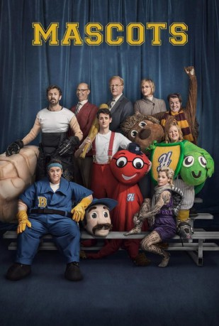 
 IMDB-Wertung: 5.8 / 10
IMDB-Wertung: 5.8 / 10  Tomatometer: 50
Tomatometer: 50  Metascore: 0
Metascore: 0 
Sie tragen so lustige Namen wie Ollie the Octopus, Tammy the Turtle oder Danny the Donkey – aber in jedem Sportmaskottchen steckt ein realer Mensch mit echten Gefühlen! Und die besten von ihnen treten beim jährlichen World Mascot Association Championship (kurz: „die Fluffies“) gegeneinander an, um dort den Preis für das beste Sportmaskottchen der Welt (den goldenen Fluffy) abzuräumen. Aber während die flauschigen Maskottchen auf der Bühne ihre Teams anfeuern, geht es hinter den Kulissen der Veranstaltung drunter und drüber. Kampfrichter A.J. Blumquist (Ed Begley Jr.) leidet unter seinem Mikropenis, die rüpelhafte wandelnde Faust (Chris O'Dowd) benimmt sich bei Hockeyspielen regelmäßig daneben und Cindi Babineaux (Parker Posey) im Gürteltierkostüm hängt noch immer der Ruf ihres Teams nach: Bei den „The Leaping Squaws“, so war der Name, witterten Kritiker Rassismus und Homophobie...
Jahr: 2016
Dauer: 95 Minuten
FSK:
Land: USA Studio: iPic TheatersTonspuren: - , - , - , - , - ,
Untertitel: Deutsch, Englisch,
Auflösung: 1080p (1920x1080) Größe: 3840 MB
Genre: Komödie
Regisseur:  Christopher Guest
Christopher Guest
Drehbuch: Christopher Guest, Jim Piddock
Soundtrack: C.J. Vanston
Darsteller:
 Zach Woods als Mike Murray
Zach Woods als Mike Murray- 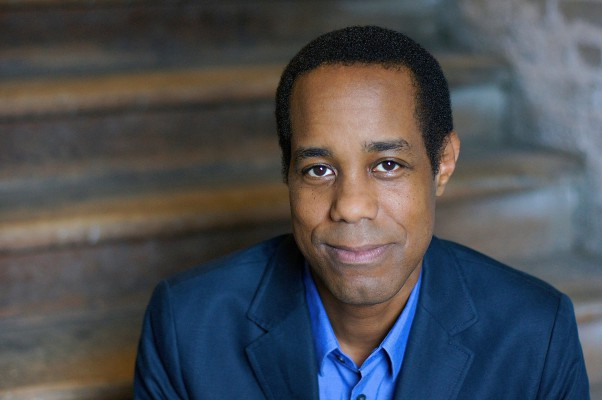 Wayne Wilderson als Dr. Harper James
- 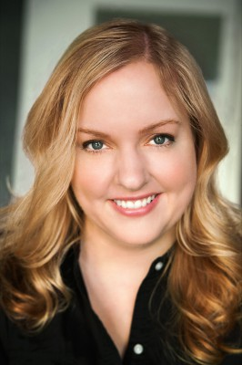 Sarah Baker als Mindy Murray
- 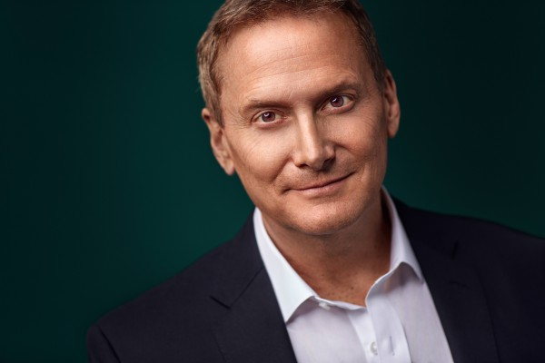 Michael Hitchcock als Langston Aubrey
- 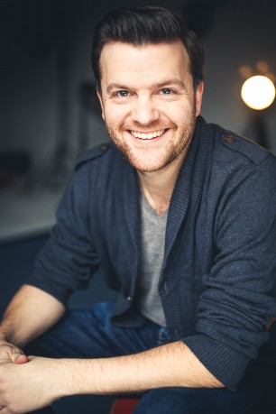 Tom Bennett als Owen Golly, Jnr.
- Kerry Godliman als Sarah Golly
 Parker Posey als Cindi Babineaux
Parker Posey als Cindi Babineaux Chris O'Dowd als Tommy 'Zook' Zucarello
Chris O'Dowd als Tommy 'Zook' Zucarello- Suanne Spoke als Cavaliers Owner's Wife
- Steven M. Porter als Cavaliers Owner
- Christopher Moynihan als Phil Mayhew
- Hayes Mercure als Football Player
 John Michael Higgins als Upton French
John Michael Higgins als Upton French- Maria Blasucci als Jessica Mundt
- Suzi Barrett als 'Does This Smell Normal' Woman
- 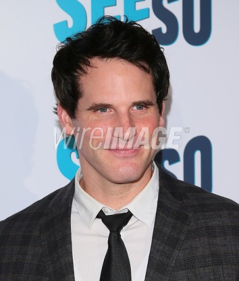 Ryan Gaul als 'Does This Smell Normal' Man
- Matt Griesser als Andy Dibble
- Brooke Hasalton als Bushwackers Lap Dancer
 Jim Piddock als Owen Golly, Sr.
Jim Piddock als Owen Golly, Sr.- Adam Karchmer als Monty Murray
- Zoe Provenzano als Maggie Murray
- Karly Rothenberg als Mindy's Mother
- 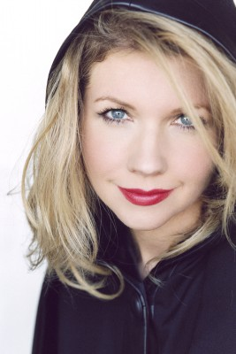 Susan Yeagley als Laci Babineaux
- Tim Baltz als South Dixie Air Ticket Agent
- Carrie Aizley als Robyn Wexler
 Ed Begley Jr. als A.J. Blumquist
Ed Begley Jr. als A.J. Blumquist- Kathreen Khavari als Las Palmas Inn Desk Clerk
- 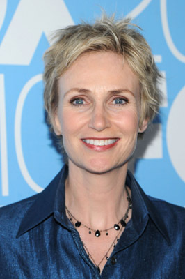 Jane Lynch als Gabby Monkhouse
- Ithamar Enriquez als Chicharito's Bouncer
- Marilyn Simon als Chicharito's Waitress
- Crafty St. James als Gabby's Fan
- Tommy Bechtold als Gabby's Fan
- Lindsey Warm als Gabby's Fan
- 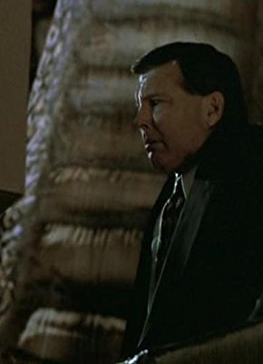 Scott Williamson als Bruce Van Wyck
- 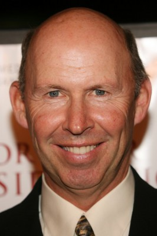 Don Lake als Buddy Campbell
- Brad Williams als Ron 'The Worm' Trippman
- 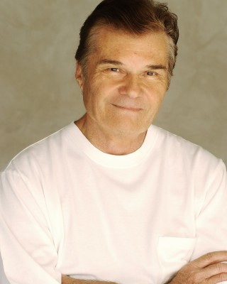 Fred Willard als Greg Gammons, Jr.
- 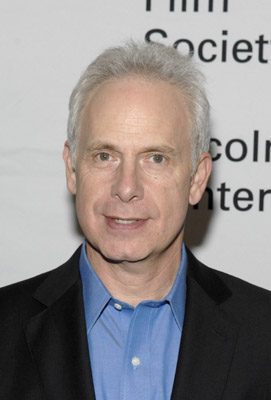 Christopher Guest als Corky St. Clair
- 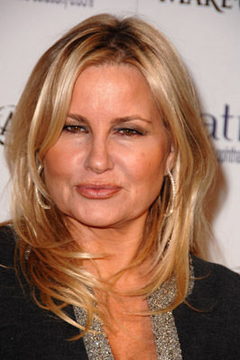 Jennifer Coolidge als Jolene Lumpkin
 Bob Balaban als Sol Lumpkin
Bob Balaban als Sol Lumpkin- Ross Kimball als Police Officer
- 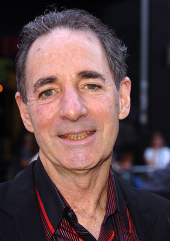 Harry Shearer als Competition Announcer
- Nelson Cheng als Qianfan the Eagle
- Morgan Obenreder als Nanny
- Jeanette Avery als Woman in Motor Home (uncredited)
- 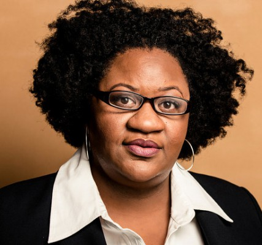 Jocelyn Ayanna als Peaches (uncredited)
- 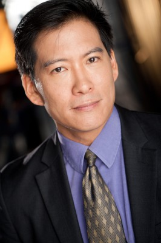 Vic Chao als Bumblebee (uncredited)
- Marty Dew als Jack the Plumber Dancer (uncredited)
- Hal Dion als Rovers Soccer Coach (uncredited)
- Derrick Dover als Sports Fan (uncredited)
Datei: X:\2016(G-M)\Mascots (2016, FSK, 1920x1080).mkv seit 01.10.2018
Festplatte: HD 2016(A-Z)
 Es gibt insgesamt 164 Filme in der Gruppe '2016(G-M)'
Es gibt insgesamt 164 Filme in der Gruppe '2016(G-M)'